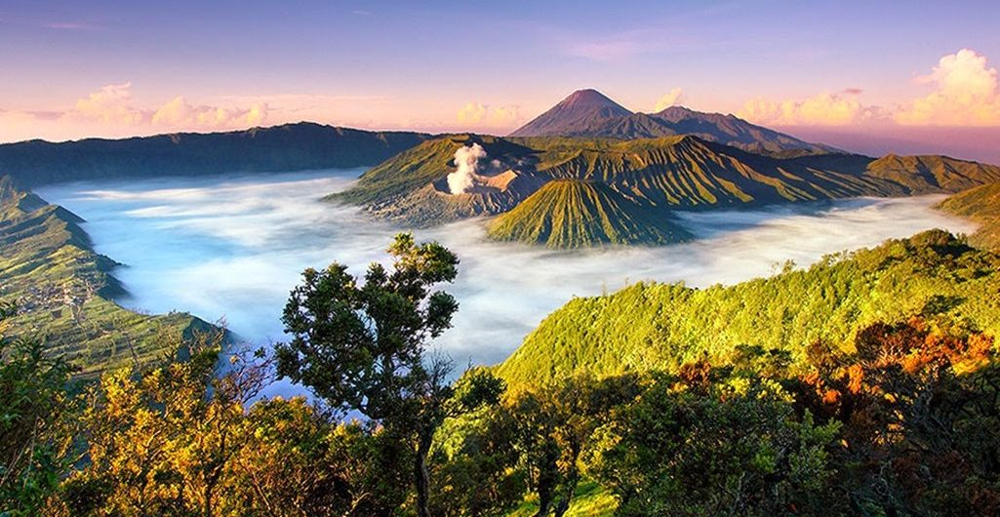

Destinasi Wisata
Destinasi Wisata
Berikut adalah objek wisata menarik di Jawa Timur

Gunung Bromo
Gunung Bromo merupakan salah satu tempat wisata terkenal yang berada di Jawa Timur.

Kawah Ijen
Kawah Ijen merupakan salah satu tempat wisata terkenal yang berada di Jawa Timur.

Air Terjun Tumpak Sewu
Air Terjun Tumpak Sewu merupakan salah satu wisata terkenal yang berada di Jawa Timur.